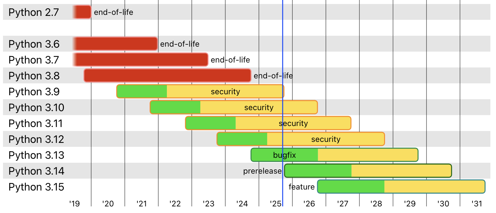
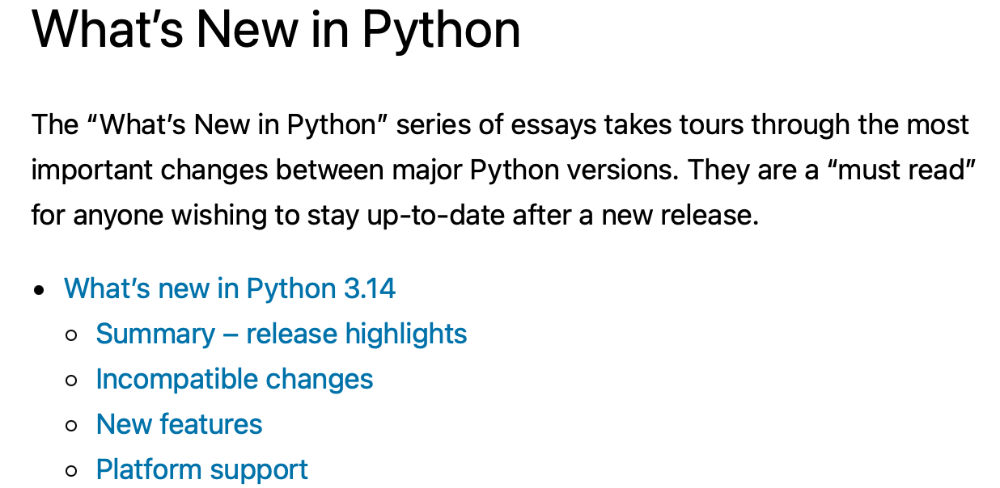

Shall We Upgrade?
Navigating Python's Rapid Evolution
Wenxin Jiang · PyCon HK
Oct. 11, 2025
Release Rhythm · Where We Are

Source: Status of Python versions:
devguide.python.org/versions/
What’s New Series · How to Follow

Docs hub: What's New in Python ·
PEP index.
Structure of "What's New" Pages
Core Features
- Release Highlights
- New Features
- Type Hints
- Other Language Changes
Technical Details
- Interpreter / Security / C API
- Optimizations
- New & Improved Modules
- Deprecated & Removed Modules
Tip: Start with highlights → New Features → [your interests].
3.10 · New syntax feature:
Structural Pattern Matching
Declarative match/case replaces nested if/elif
def http_error(status):
match status:
case 400:
return "Bad request"
case 401 | 403 | 404:
return "Not allowed"
case _: # wildcard
return "Something's wrong"
Docs: What’s New in 3.10 ·
PEPs: PEP 634, 635, 636.
3.10 · New typing feature:
Union Types
# before
from typing import Union
def fun(x: Union[str, bytes]):
# after
def f(x: str | bytes):
Docs: What's New in 3.10 ·
PEP: PEP 604, PEP 613, PEP 647.
3.11 · Highlights: A Free Speed Boost
CPython 3.11 is an average of 25% faster than 3.10, with 10–60% overall speed improvements.
- Faster Startup: Interpreter startup is now 10-15% faster.
- Faster Runtime: Cheaper, lazy Python frames

Docs: What’s New in 3.11 (Release highlights) · Benchmark
3.13 · Highlights: Free‑Threaded
Global Interpreter Lock ensures only one Python thread executes at a time
✓ Benefits
- True parallel execution for CPU-bound tasks
- Better multi-core utilization
- No need for multiprocessing overhead
⚠ Trade-offs
- Single-threaded code may be slower
- C extensions need compatibility updates
- Memory usage increases
Docs: What's New in 3.13 ·
PEP 703: Making the GIL Optional
3.14 · Official Free‑Threaded & Multiple interpreters
- PEP 779: Free‑threaded Python is officially supported (still optional).
- PEP 734: Multiple interpreters in the stdlib for multi‑core parallelism with isolation.
Docs: What’s New in 3.14 ·
PEP 779 ·
PEP 734 ·
Package Migration · uv
- 🚀 Replace pip with similar interface
- ⚡️ 10-100x faster than pip
- 🗂️ Provides comprehensive project management
uv init # create project
# install and pin specific Python version
uv python install 3.13
uv python pin 3.13
# install packages
uv add package-name
uv add -r requirements.txt
Docs: uv: install Python
· Migration guide: pip to uv.
Takeaways
- Annual release: 3.11 (2022), 3.12 (2023), 3.13 (2024), 3.14 (2025)...
- "What’s New" pages for each version summarize key changes.
- PEPs provide detailed design docs for new features.
- Stay curious and keep exploring each release!
Thank you for attention!